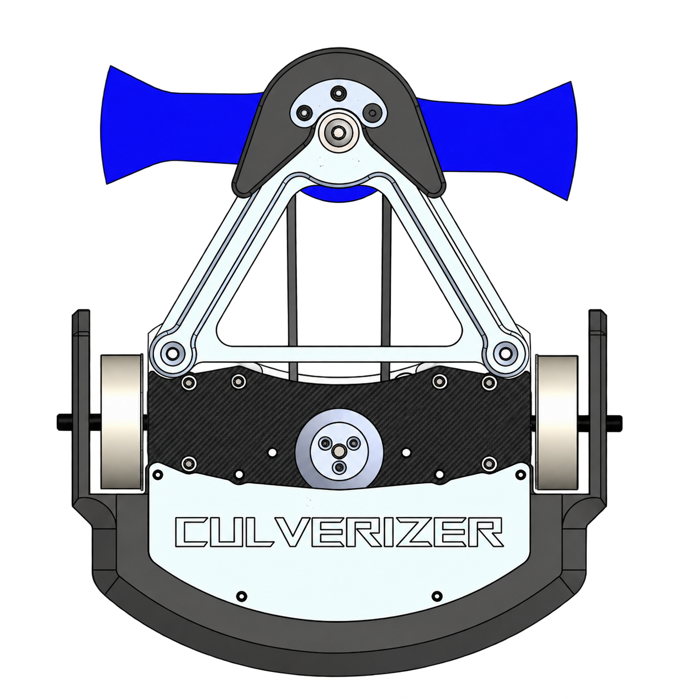
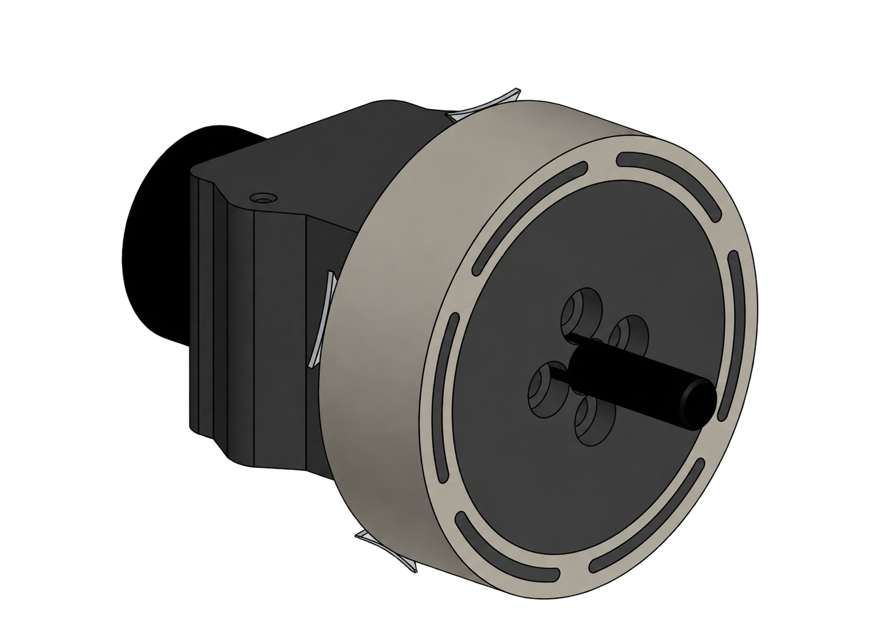
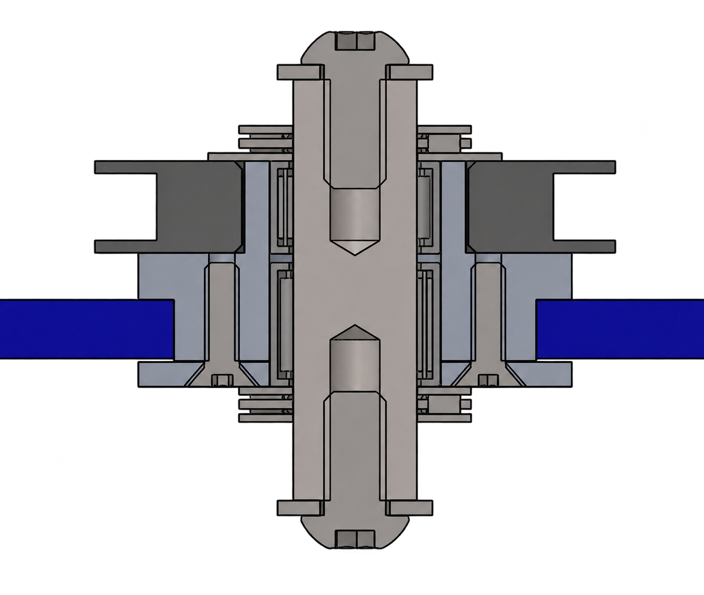
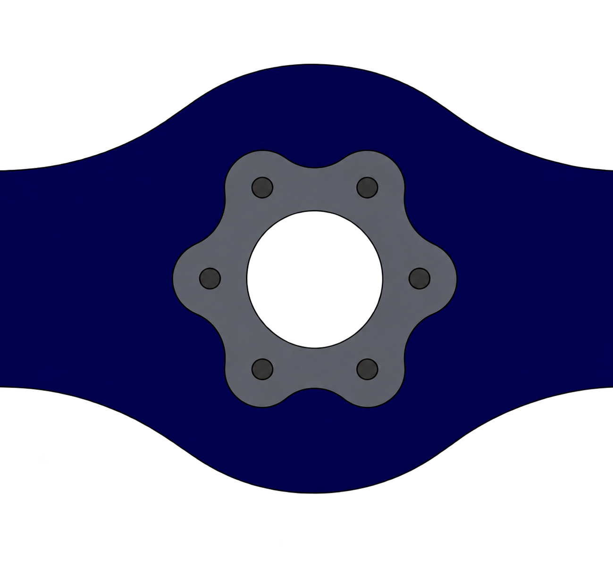
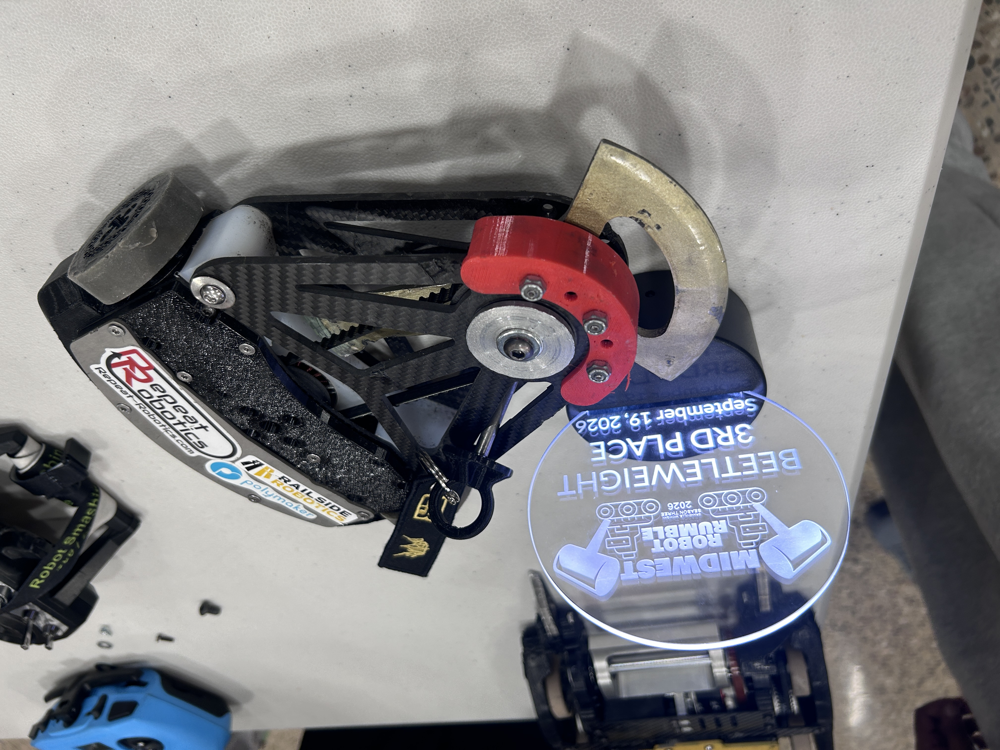

My role
Lead Engineer: design, manufacturing, electronics, & testing
Competition strategy and drive coach
Design approach
I designed Culverizer around an offense-first strategy, using a heavy, hardened steel blade to destroy opponents' wheels and batter their weapon assemblies.
Carbon-fiber plates provide chassis rigidity and support the weapon assembly, while the 3D-printed 95A TPU body flexes to absorb and disperse impact energy. The TPU serves as sacrificial armor, taking damage to protect the internal electronics.

Drivetrain
Brushless motors propel Culverizer at 12 mph. TPU shock mounts let the motors deflect under impact, directing energy away from the gearboxes to extend their lifespan.
I made custom molds for 2.1-inch wheels with impact-absorbing TPU cores and 45A urethane treads. The urethane adheres to the TPU and provides traction and acceleration; 1/32-inch spring-steel "spiked cleats" further improve traction and control. The compliant cores also help protect the wheels and gearmotors from impact.

Weapon Assembly
A 600 kV motor at 25.2 V drives the blade through a 6:5 belt reduction, reaching a measured 220 mph and storing 700 J of energy. The flat timing belt allows the assembly to slip on impact, reducing shock transferred to the motor. A spline pattern transfers torque to the blade.


Competition Results
I built three working copies of Culverizer, configured to counter different opponent build styles. Across seven competitions, v4.2 earned an 18-15 record (54.5% win rate), including two third-place finishes.
